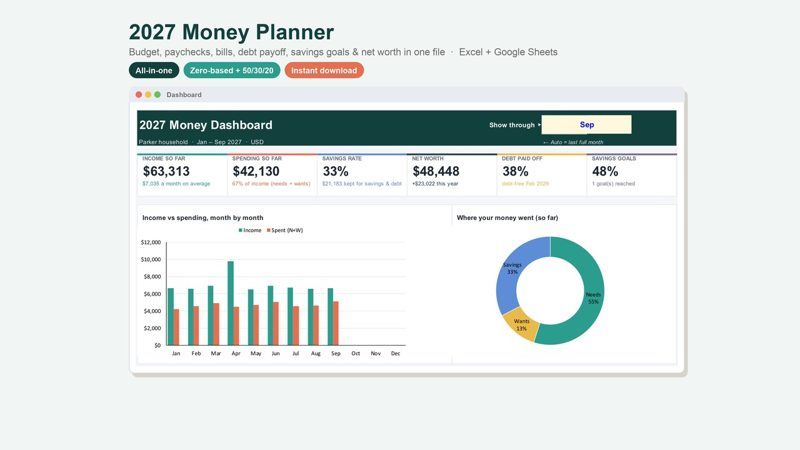
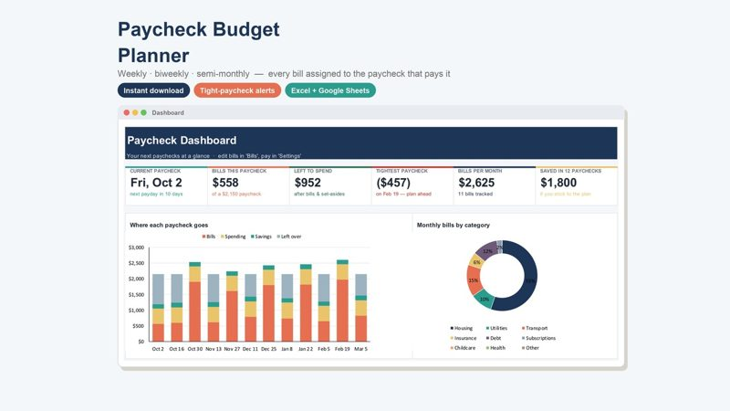

How to Budget a Biweekly Paycheck (Bill-by-Bill Example)
A monthly budget assumes money arrives once a month. If you're paid every two weeks, it doesn't — and the classic problem appears: rent is due before the paycheck that was supposed to cover it. The fix is simple: budget each paycheck, not each month.
1. Assign every bill to a paycheck
Rule of thumb: each bill is paid from the last paycheck that arrives before its due date. Write your bills in due-date order, then draw a line at each payday.
Example: $1,850 take-home every two weeks, with paydays this month on the 2nd and the 16th. Groceries ($250) and gas ($80) come out of every paycheck.
| Paycheck | Bills it covers (due date) | Bills | + Groceries & gas | Left over |
|---|---|---|---|---|
| 2nd | Internet $60 (8th) · Utilities $150 (12th) · Car payment $320 (15th) | $530 | $330 | $990 |
| 16th | Phone $70 (20th) · Insurance $140 (25th) · Rent $1,400 (1st of next month) | $1,610 | $330 | −$90 |
2. Fix the short paycheck before it happens
The second paycheck is $90 short, even though the month as a whole has money left ($990 − $90 = $900). The answer isn't a cheaper life — it's moving money between paychecks: set aside $300 from the first paycheck for rent.
| Paycheck | Left over before | Move | Left over after |
|---|---|---|---|
| 2nd | $990 | −$300 | $690 |
| 16th | −$90 | +$300 | $210 |
Seeing this a month ahead is the whole point: a short paycheck you planned for is just a transfer; one you didn't is a late fee.
3. Plan the two "extra" paychecks
Every two weeks means 26 paychecks a year, not 24. So two months each year bring three paychecks instead of two. Build your regular budget on two paychecks a month ($3,700 here) and give the third paycheck a job in advance: emergency fund, extra debt payment or a sinking fund for annual bills.
With $1,850 every two weeks, that's $48,100 a year — about $4,008 a month on average, but only $3,700 in a normal two-paycheck month. Budgeting on the average is how people come up short.
4. Keep a small buffer
Once the plan works, try to keep one paycheck's worth of bills sitting in your account. After that, due dates stop mattering — but until you get there, the paycheck-by-paycheck plan keeps you on time.
These templates assign each bill to its paycheck and flag tight paychecks automatically:

2027 Money Planner
Monthly budget, paycheck plan, bills, debt payoff, savings goals and net worth — all fed by one simple transaction log.
See it on Gumroad →
Paycheck Budget Planner
Every bill is assigned to the paycheck that pays it, so you always know what's left — and see tight paychecks coming.
See it on Gumroad →General information only, not financial, tax or legal advice.